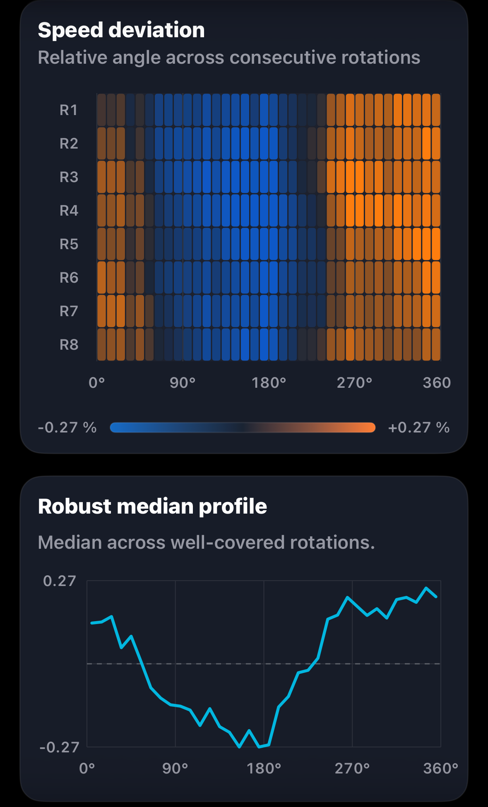
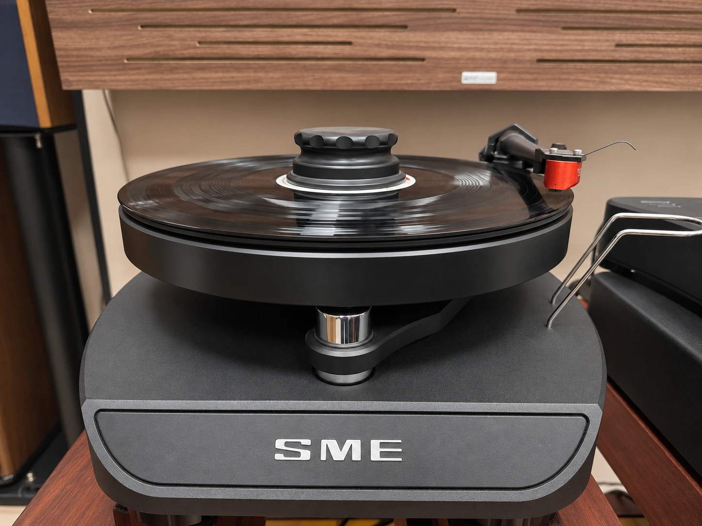
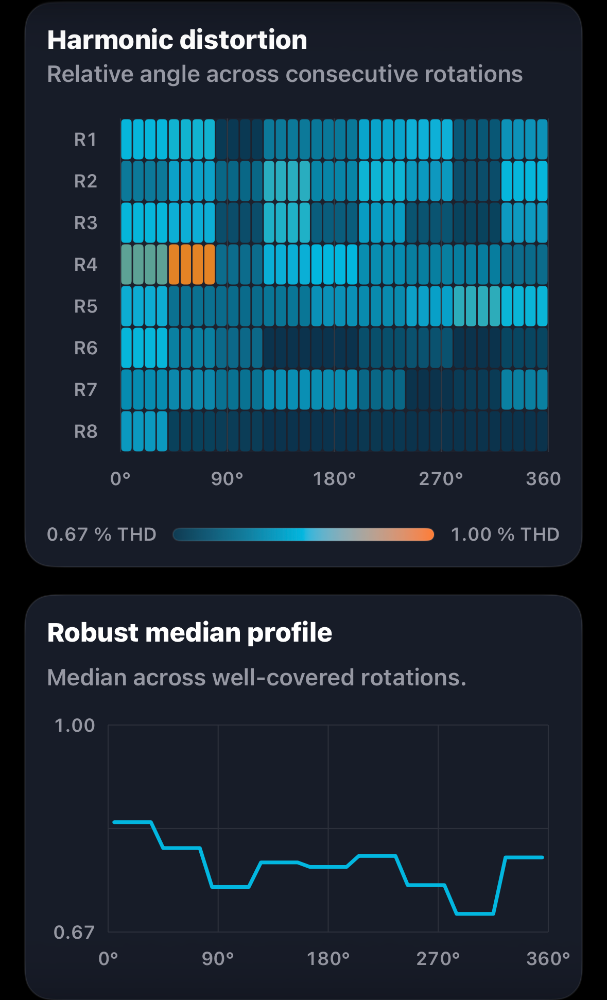
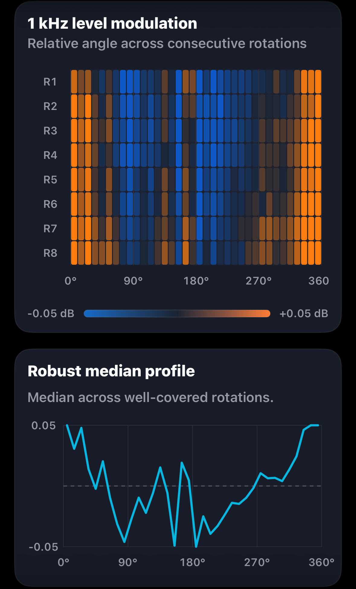

Speed deviation

Left channel selected

Groove Scope Studio · GS-2026-0014
At Entertainment Machine in Rome, the SME ran within 0.04% of nominal speed. A 5.57 dB gap between the two directions of crosstalk gives our first certified Groove Scope Studio reseller in Rome a clear result to check next time.
Measurement at a glance
Michelangelo Canonico measured this system for Direct Sound Records on 6 November 2026. The original report gives these headline figures.
Rotation fingerprints
Each view pairs Groove Scope’s angular heatmap with its robust median profile. Choose L or R on each card. Channel assignments follow the supplied filenames.

Left channel selected

Left channel selected

Left channel selected

Left channel selected
Each plot shows eight revolutions on its own relative angular reference. On smaller screens, swipe to browse all four plots.
Rotational behaviour
The SME averaged 33.32 RPM under stylus load, with 0.038% DIN-shaped wow and flutter RMS. Both speed fingerprints show a broad dip near the middle of the turn and a recovery later in the turn. That pattern recurs over all eight revolutions. Its cause remains open.
Harmonics stayed steady during this recording. THD at 1 kHz measured 0.76% on the left and 0.89% on the right.
Stereo separation
Average separation was 22.0 dB, with crosstalk of −24.8 dB left to right and −19.2 dB right to left. The leakage fingerprints show two nearly level traces sitting apart on the same scale. The 5.57 dB gap is a feature of the capture across the turn.
The left channel’s output was 1.28 dB higher. That signal-level difference is measured separately from the leakage between channels.
Measurement chain
The report identifies the fitted Series V and lists the capture input as EVO4. Charisma Audio calls the cartridge the MC-1 Alpha. Charisma Audio MC-1 Alpha ↗
Open technical record
The editorial review connects directly to the source report, structured record, checksums, measurement method and original asset archive.
Measurement results
The table preserves the report’s figures for playback speed, weighted and unweighted stability, channel behaviour and harmonic distortion.
| Metric | Measured result |
|---|---|
| Playback speed under stylus load | 33.32 RPM |
| Playback speed error | −0.04% vs 33⅓ RPM |
| Settled speed range | 33.21–33.42 RPM |
| Settled speed span | 0.21 RPM |
| DIN-shaped wow & flutter RMS | 0.038% |
| Raw speed variation, unweighted RMS | ±0.174% |
| Raw speed variation, unweighted 2-sigma | ±0.347% |
| Raw wow, unweighted RMS | 0.168% |
| Raw flutter, unweighted RMS | 0.040% |
| Channel balance, L−R | +1.28 dB |
| Average channel separation at 1 kHz | 22.0 dB |
| Electrical crosstalk, L→R | −24.8 dB |
| Electrical crosstalk, R→L | −19.2 dB |
| Directional crosstalk difference | 5.57 dB |
| Total harmonic distortion | Left 0.76%, right 0.89% |
| THD difference, L−R | −0.13 percentage points |
| Second harmonic (H2) | Left −42.9 dB, right −41.6 dB |
| Third harmonic (H3) | Left −53.0 dB, right −51.0 dB |
| Fourth harmonic (H4) | Left −62.8 dB, right −57.2 dB |
| Fifth harmonic (H5) | Left −60.8 dB, right −57.6 dB |
| H2 difference summary | Right 1.3 dB higher |
| H3 difference summary | Right 2.0 dB higher |
| Harmonic reliability | Steady during recording and suitable for setup guidance, per the report |
The directional crosstalk difference retains the report’s precision and may differ from subtraction of the rounded channel values.